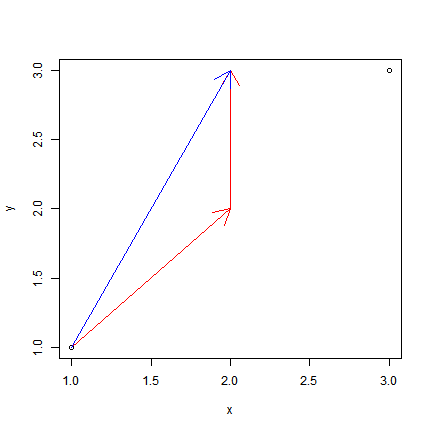

Last time, we discussed surfaces in \(\mathbf{R}^3\): in particular, the graphs of 2-variable functions, and spheres, cylinders, and cones. We also introduced surface slicing. We conclude that discussion with more on slicing.
Let us analyze the possible slices of a sphere—this time, in greater detail and precision. Here, we must make a choice: are we going to immediately slap coordinates on everything in sight, choosing centers and radii and so on, ending up with a huge pile of equations to solve? This is what we use to call the brute-force approach. It will succeed, with patience and stamina. But it is usually not illuminating.
It is always best to use symmetry to our advantage and try to choose coordinates that will best allow us to exploit it. A sphere is a highly symmetric shape, and the center is the most symmetric point: it looks the same from each point of the sphere. Hence we should center our sphere at the origin. By adjusting the scale of the axes, we can also assume that it has radius 1. This sphere is called the “unit” sphere.
It would be even better to just picture the sphere in a blank space, empty of axes and scale, but perhaps this is too disorienting for a first pass.
Now, let us imagine all the planes that are parallel to the \((y,z)\)-plane as our knives, and see which slices of the sphere we get. Most such planes miss the sphere entirely, so one class of slice is “empty”.
Exercise. Give equations of all the planes parallel to the \((y,z)\)-plane that miss the unit sphere.
What if the sphere and the plane do, in fact, meet? You can get a good idea of what the slices are by thinking “perturbatively”. Imagine a plane that misses the sphere, and slide it closer and closer. At some time, they will touch for the first time. The slice at that instant is a point.
Exercise. How many planes parallel to the \((y,z)\)-plane meet the sphere at one point? Give equations for all of them.
Now push the plane a little further into the sphere. What is the intersection? You might not have a clear mental picture of it, or maybe you just have a guess you’re not convinced is correct. In Workshop 01, we will use algebra (greatly simplified by our diligent attention to symmetry) to illuminate the situation.
When we are considering motion that is confined to a single line, one number suffices to describe a distance—that is, after we have agreed on the units of the length dimension and the origin of the line. Once these are settled, every pair of positions gives rise to a number: the distance between them. Conventionally, the distance between two positions on a line is always a nonnegative number, but it is convenient to use our notion of negativity as well. This leads to the notion of displacement, which we might also call “directed distance” or “signed distance”. The idea is that we no longer regard the two positions as equivalent. Instead, one is the “initial” and one is the “final” position. We agree, once and for all, that displacements are calculated by subtracting the initial position from the final one:
displacement = pos_final - pos_initial\[ \Delta x = x_1 - x_0 \]
Then, every ordered pair of positions corresponds to a number, perhaps a negative one; and every number corresponds to a movement.
With these ideas firmly in place, it is not too hard to generalize them to the case of motion in a plane. This is done in the next section. We will assume that the origin and suitable coordinate axes and units are already agreed upon.
Notice that displacement numbers don’t depend on a particular starting (or ending) position. The \(3\) you get by moving from \(2\) to \(5\) is identical to the one you get moving from \(-166\) to \(-163\).
But what distinguishes the position \(3\) from the displacement \(3\)?
The framework of vectors arises from the desire to be able to compute displacements by subtracting points in the plane, just like in the one- dimensional case described above.
In the one-dimensional case, positions and displacements seem like the same kind of object. Only context allows us to really determine whether a particular \(3\) is a position or a displacement between positions. Keep this in mind as you continue reading.
Here is a plot of a few paths connecting the points \((1,1)\) and \((2,3)\) in the plane.
plot(c(1, 3), c(1, 3), xlab = "x", ylab = "y")
arrows(1, 1, 2, 2, angle = 30, col = "red")
arrows(2, 2, 2, 3, angle = 30, col = "red")
arrows(1, 1, 2, 3, angle = 30, col = "blue")
A moment’s reflection shows that, no matter how you walk from \((1,1)\) to \((2,3)\), your net change in the \(x\)-direction is \(1\). In the \(y\)-direction, it is evidently \(2\). If we start out at \((2,3)\) and end at \((1,1)\), these changes become negative.
The idea of a displacement vector is to bind these two separate numbers, which we might call \(\Delta x\) and \(\Delta y\), together into one mathematical object. We say the displacement from initial position \((1,1)\) to final position \((2,3)\) is \(\langle 1, 2 \rangle\).
Just like a point in the plane, a displacement vector is specified as a pair of numbers. We distinguish between the two by using round brackets for points \((3,-2)\) and angle brackets for vectors \(\langle 3, -2 \rangle\). If we don’t want to refer to the coordinates separately, we give the vector a letter name and use an arrow decoration, like \(\vec{v}\).
For any particular initial and final point, there’s only one displacement between them. But there are many paths between them, which we can visualize as chains of vectors. For example, in the figure above, the points \((1,1)\) and \((2,3)\) are linked via the intermediate point \((2,2)\).
What are the displacements incurred with initial point \((1,1)\) and final point \((2,2)\)? With initial point \((2,2)\) and final point \((2,3)\)?
Notice that these displacements add appropriately! Their “sum”, adding coordinate-wise, is the overall displacement incurred in moving from \((1,1)\) to \((2,3)\). For this reason, we define the sum of two vectors to be the vector whose entries are the sums of the corresponding entries:
\[ \langle x_1, y_1 \rangle + \langle x_2, y_2 \rangle = \langle x_1 + x_2, y_1 + y_2 \rangle \]
Observe that the zero vector \(\langle 0, 0 \rangle\) behaves appropriately under this conception. If adding vectors corresponds to accumulating displacements, adding \(\langle 0, 0 \rangle\) should be an operation with no effect—and indeed, it is.
What about subtracting vectors? Well, if we make sense of the negative of a vector we will be free to regard \(\vec{v} - \vec{w}\) as an abbreviation for \(\vec{v} + (-\vec{w})\). A negative displacement has a clear physical meaning: the same distance, but the opposite direction. Therefore negation and subtraction are accomplished coordinate-wise, just like addition.
Much of the time we are concerned just with the direction of a motion, and not as much with its distance (“magnitude”). We’ll need a test to see whether two vectors, described in coordinates, point in the same direction in the plane. This is the subject of Workshop 02. For now, let us discuss the subtleties of the concept of “parallel” in our new context of vectors.
Since lines in the plane are not directed, we don’t need a word to describe this situation in ordinary geometry:
plot(c(1.5, 3), c(1.5, 3), xlab = "x", ylab = "y")
arrows(1.75, 1.5, 2.75, 2.5, angle = 30, col = "red")
arrows(3, 3, 2, 2, angle = 30, col = "blue")
Are the vectors parallel, or not? Reasonable people can disagree, and in fact there is not universal agreement on the terminology. We will establish the convention that vectors as pictured above are indeed parallel. Some authors reserve the term “anti-parallel” for this situation.
Suppose that \(\vec{u}\), \(\vec{v}\), \(\vec{w}\), and \(\vec{z}\) are vectors in the plane. What kind of equations involving them might we consider? We haven’t defined most familiar algebraic operations, like multiplication, logarithms, exponents… seems like all we can build are linear equations, like this one:
\[ 2 \vec{u} + 5 \vec{v} = -3 \vec{w} + \vec{z} \]
Regarded as an equation of displacements, it is easy to interpret: the equation states that the overall displacement incurred by following \(\vec{u}\) twice and \(\vec{v}\) five times is equal to that incurred by following \(\vec{w}\) backwards three times and \(\vec{z}\) once (forward).
Any such linear equation can be converted, by the standard rules of algebra, into an equation with the zero vector on the right-hand side. Such an equation states that a particular combination of displacements cancels out exactly, that the overall \(x\)- and \(y\)-displacements are both \(0\).